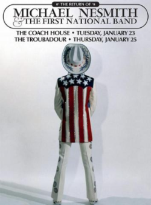

Tickets Now Avail: Michael Nesmith & The First National Band Return To The Stage
Almost fifty years ago, in May 1968, Michael Nesmith ventured to Nashville to record a series of groundbreaking sessions with local musicians. What they produced is now recognized as the foundation of the country-rock and alt-country movements.
“I could just feel this happening, that there was this ‘thing,’” recalled Nez. “So, I headed off to Nashville to see if I couldn’t get some of the Nashville country thing into the rock’n’roll or vice versa.” Nez’s intuition was correct; he was on the leading edge of a new genre. His exploratory work caught the attention of legendary RCA A&R man Felton Jarvis who had produced the Nashville sessions with Nez. In February 1970, Jarvis signed Nez and his new band, the First National Band (pedal steel virtuoso Red Rhodes, bassist John London, and drummer John Ware), to a deal with the venerable imprint and produced their first record, Magnetic South.
Despite the eight innovative country-rock LP’s Nesmith created between 1970 and 1978, he is one of the less heralded architects of the genre. The First National Band’s three classic albums -- Magnetic South, Loose Salute, and Nevada Fighter -- spawned four charting singles, including “Joanne” which reached #21 on the Billboard Top 100. However, live success for the fledgling band was harder to come by and the musicians Nez collected to bring his country-rock dream to market soon scattered. Nez played out his remaining RCA albums with Red Rhodes and toured with him throughout the ‘70s. Yet the full-blown sounds of the First National Band were never to be heard on the concert stage again.
In January 2018, Michael Nesmith will bring this music back to the live arena with a series of shows focused on his RCA recordings, including a show on January 25th at the Troubadour in Los Angeles, where he debuted the First National Band in March 1970. Songs like “Different Drum” (a Top 20 hit for Linda Ronstadt & The Stone Poneys), “Listen to the Band”, “Some of Shelly’s Blues” (covered by the Nitty Gritty Dirt Band), and “Silver Moon” will join lesser-known but equally transcendent album sides in a rebirth of what was labeled by critics as “the greatest music that you never heard.”
Where to see Michael Nesmith & The First National:
- The Coach House, San Juan Capistrano, CA - Get Tickets
- The Troubadour, West Hollywood, CA - SOLD OUT TICKETS ON SALE THIS FRIDAY.